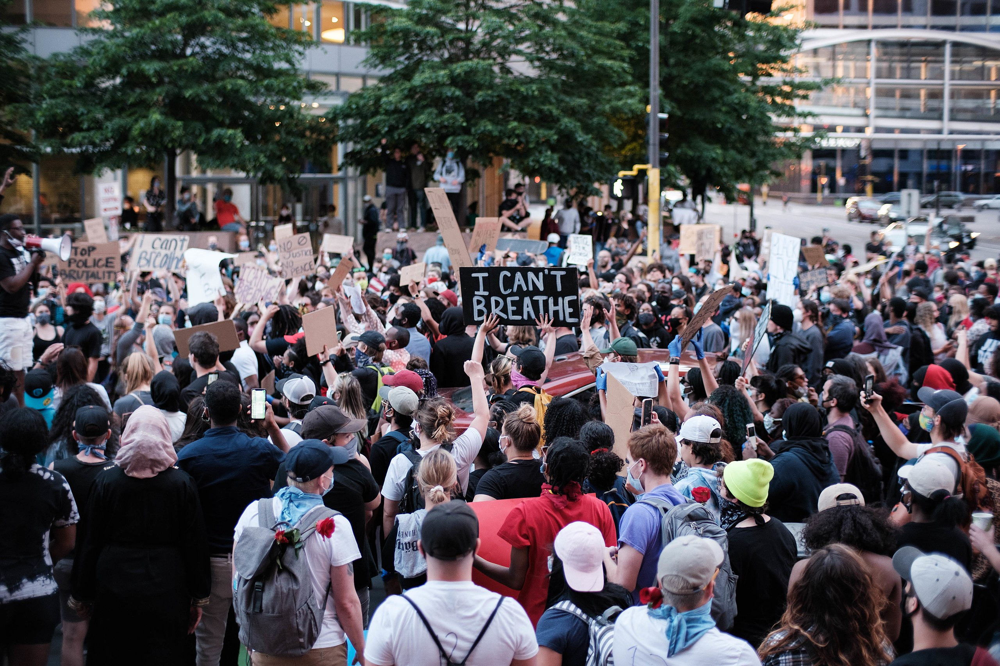

Five Largest Protests in U.S. History

Protesters in Minneapolis, Minnesota where George Floyd was murdered and the unrest began
The tradition of protests that demand progressive change in the United States continue.
Here are the country's five top protests in terms of attendance
- George Floyd protests nationwide in 2020 with an estimated 26 million protestors.
- Women's March in 2017 drew about 5.6 million people nationwide.
- March for Our Lives, a student led protest in 2018 against gun violence, drew about 2 million people.
- Women's March in 2018 drew about 1.5 million protestors.
- March on Washington for Lesbian Gay and Bi Equal Rights and Liberation drew about 1 million people in 1993.
Compiled with wikipedia